Academic Milestones
"Knowledge is the life of the mind."
 2010 – 2011
2010 – 2011
Kindergarten
Attended Tabika Kemas Bukit Piatu. Where my curiosity began, learning basic reading, writing, and making my first friends.
| Location: Bukit Piatu, Malacca |
2012 – 2017
Primary School (SK)
SK Seri Duyong. Built my foundation in academics and discipline.
| Result: UPSR 2017: 5A 1B |
| Location: Kampung Permatang Duyong |
2012 - 2017
Primary School (SRA)
SRA Jaim Seri Duyong. Balancing spiritual knowledge with academic success.
| Result: UPKK 2016: 8A |
| Location: Kampung Permatang Duyong |
2018 – 2022
Secondary School
SBP Integrasi Selandar. A boarding school experience that taught me independence and leadership.
| Result: SPM 2022: 6A 5B+ 1B |
| Location: Selandar, Malacca |
 Current
Current
University
Pursuing Diploma in Information Management at UiTM Cawangan Johor.
| Status: Final Semester |
| Campus: Segamat, Johor |
 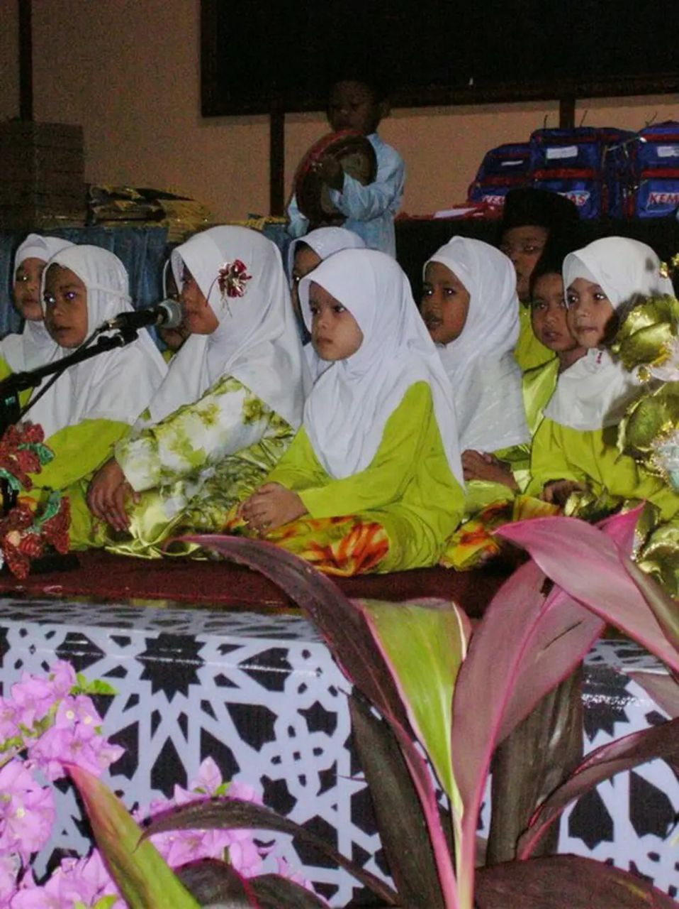
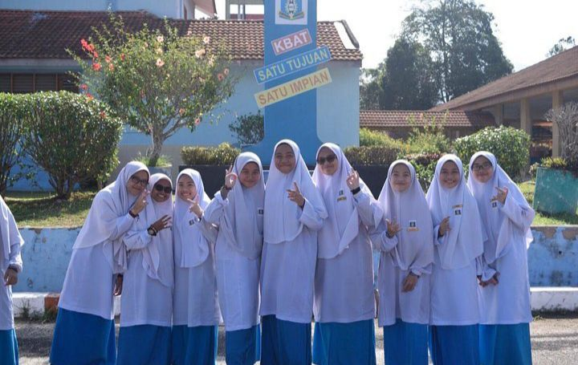
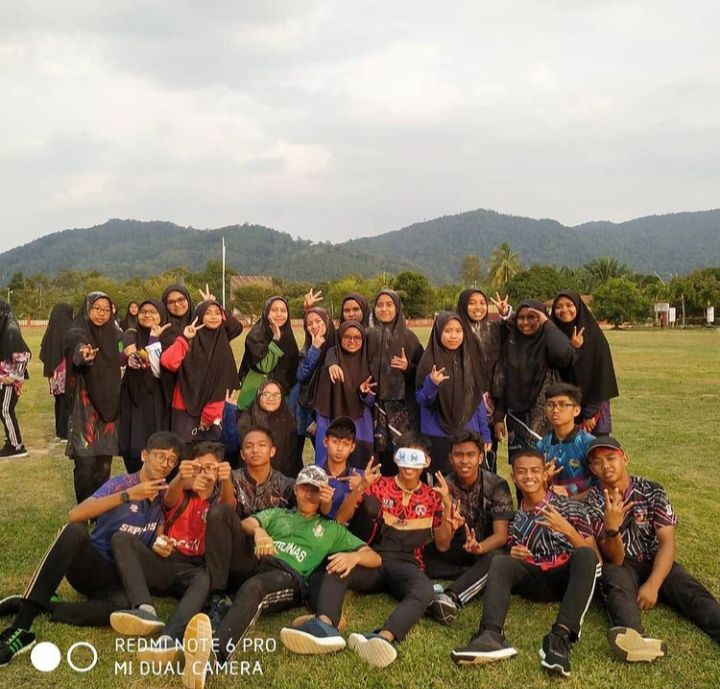
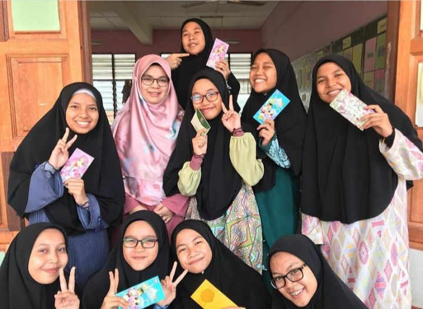
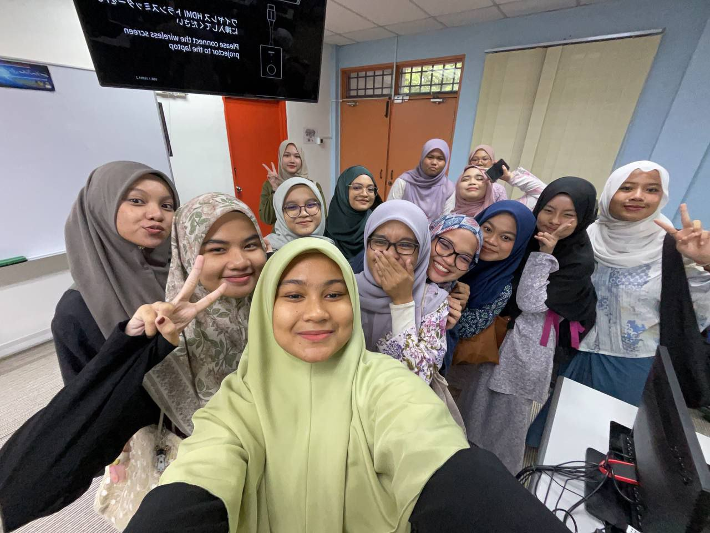
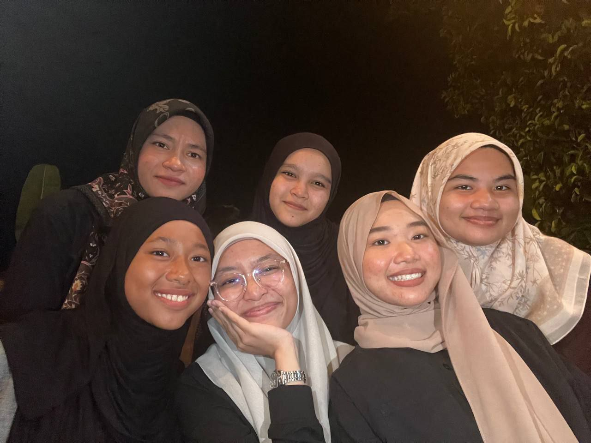
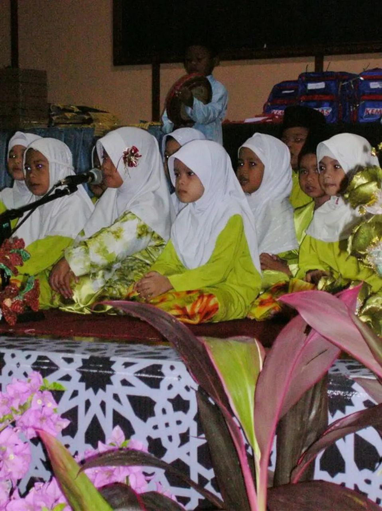
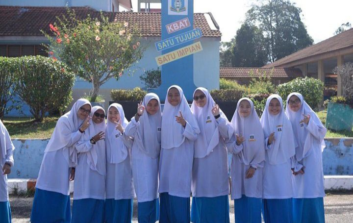
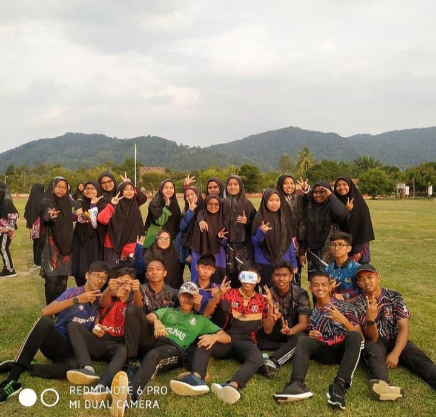
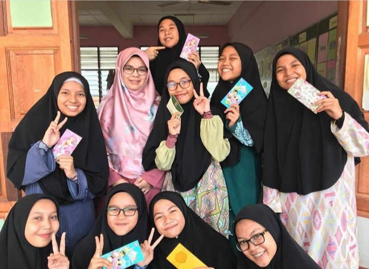
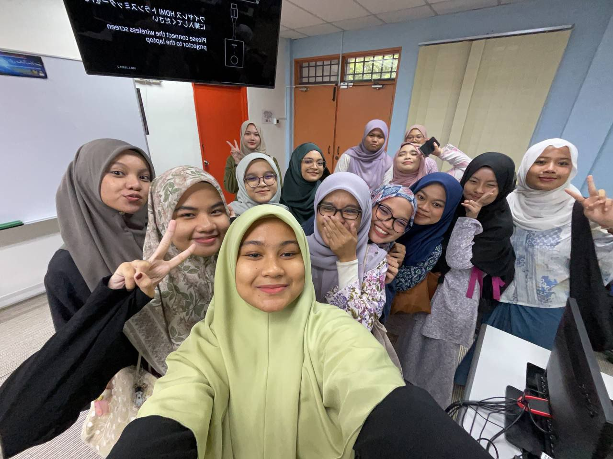
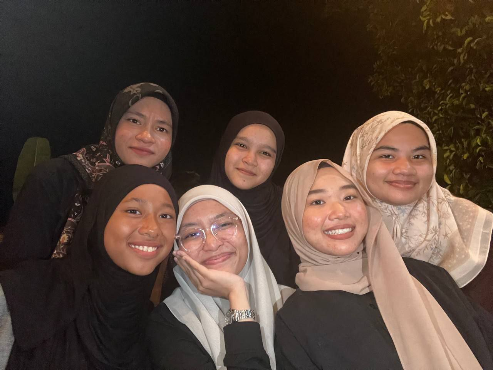
 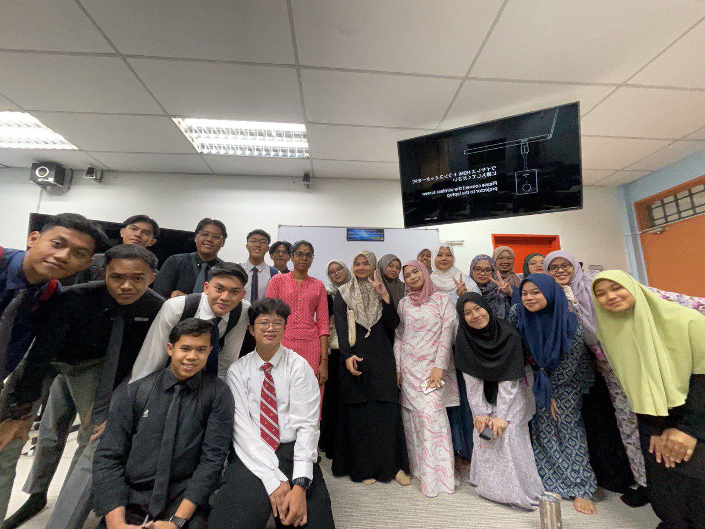
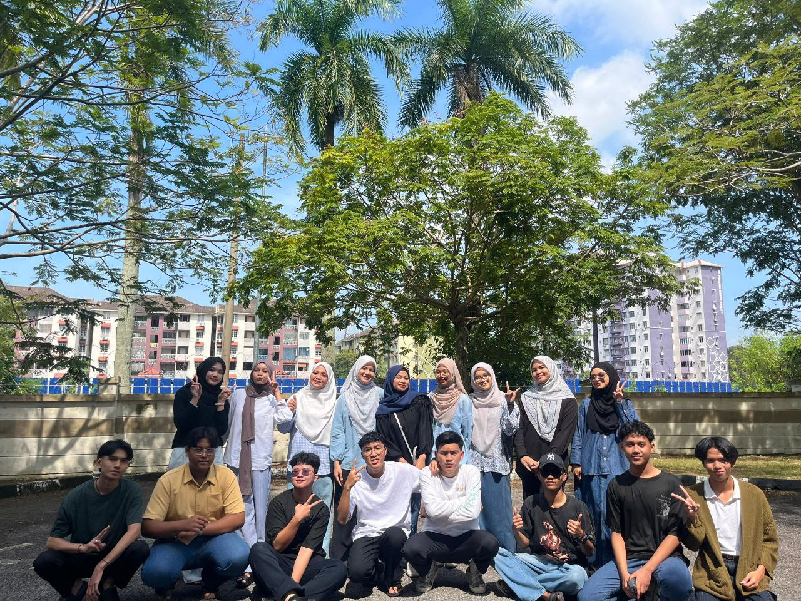
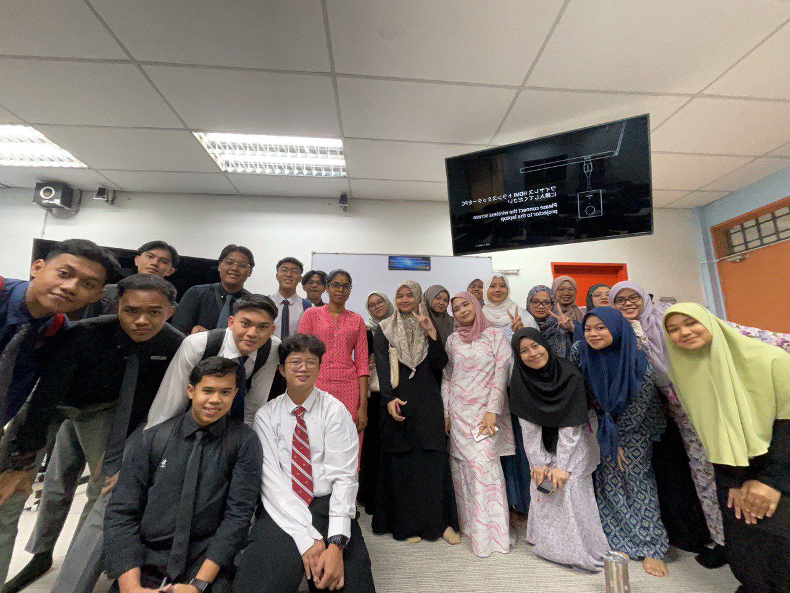
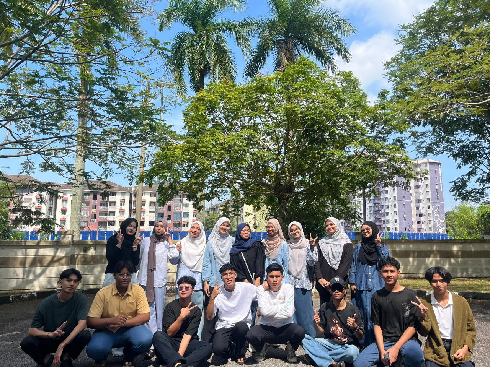